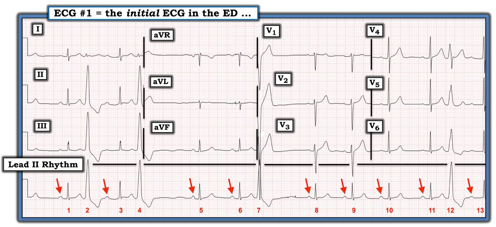
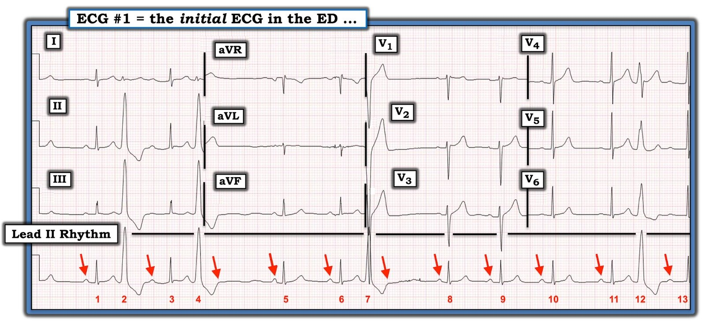
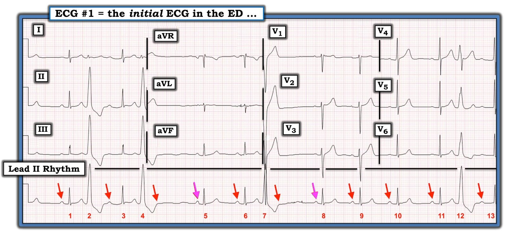
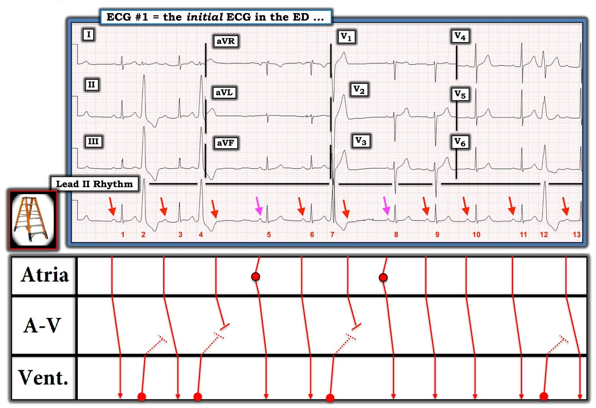
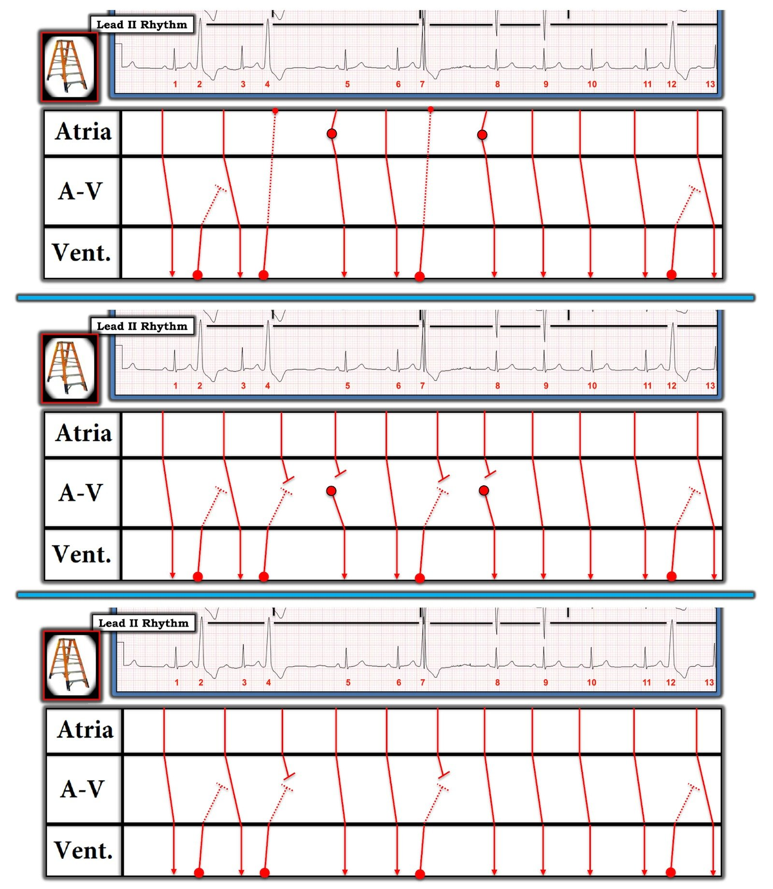

09/04/2020 — PVC và blốc AV ở một người trẻ tuổi?
Bản dịch tiếng Việt của bài "PVCs and AV Block in a Young Adult?" – Dr. Smith’s ECG Blog. Giữ nguyên toàn bộ 7 hình ảnh của bản gốc.
===================================
BÌNH LUẬN CỦA TÔI, bởi KEN GRAUER, MD (9/4/2020):
===================================
Bệnh nhân là một người đàn ông 30 mấy tuổi, có tiền sử hút thuốc lá lâu năm — đến khoa cấp cứu (ED) vì chóng mặt dữ dội, gần ngất và khó chịu ở ngực trong vài ngày qua. Điện tâm đồ ban đầu và dải nhịp chuyển đạo II dài của anh ấy được trình bày ở Hình 1.
CÂU HỎI:
- Bạn sẽ diễn giải điện tâm đồ và dải nhịp trong Hình 1 như thế nào?
- Liệu blốc nhĩ thất (blốc AV) có khả năng là nguyên nhân gây ra các triệu chứng của bệnh nhân không?

SUY NGHĨ CỦA TÔI: Ca này có 2 phần: #1) Diễn giải nhịp tim; và, #2) Diễn giải điện tâm đồ 12 chuyển đạo trong bối cảnh bệnh sử.
- Thừa nhận: Tôi không hoàn toàn chắc chắn về mọi khía cạnh của nhịp tim chỉ từ một bản ghi duy nhất trong Hình 1. Dù vậy — tôi hy vọng việc đi qua quá trình suy nghĩ tuần tự của tôi sẽ mang lại nhiều điều bổ ích.
Việc diễn giải nhịp tim trong Hình 1 không đơn giản. Có thấy một số sóng P xoang — và có 4 PVC trên bản ghi này. Câu hỏi được đặt ra là có khả năng blốc AV hay không — và khoảng PR trước các nhát QRS hẹp không giữ nguyên (tức là, khoảng PR dài hơn ở trước nhát #3 và 13 — và ngắn hơn ở trước nhát #5 và 8 — so với khoảng PR ở trước các nhát #1, 6, 9, 10 và 11).
- ĐIỂM THEN CHỐT (PEARL) #1: Khi gặp một nhịp tim phức tạp, trong đó một số khía cạnh của bản ghi thì rõ ràng dễ hiểu, nhưng những khía cạnh khác thì không — hãy BẮT ĐẦU với những phần DỄ HƠN của bản ghi!
- ĐIỂM THEN CHỐT (PEARL) #2: Tôi thích bắt đầu bằng cách xem trước tiên LIỆU có nhịp nền hay không? Ví dụ, trên điện tâm đồ #1 — nhịp nền có vẻ là loạn nhịp xoang, xác định dựa trên các sóng P dương có khoảng P-P thay đổi rõ rệt (các mũi tên ĐỎ trong Hình 2).
- Như đã nêu ở trên — có 4 PVC trên bản ghi này. PVC thứ 2 và thứ 3 (tức là, nhát # 4 và 7) có khoảng nghỉ bù. Điều này là do dẫn truyền ngược dòng đi ngược lên đủ xa để ngăn sóng P xoang kế tiếp dẫn truyền xuôi xuống thất.
- Đôi khi, nếu thời điểm “vừa khéo” — PVC có thể “xen kẽ” (interpolated) — tức là chúng xuất hiện kẹp giữa 2 nhát xoang bình thường mà không có khoảng nghỉ bù thông thường. Đây chính xác là điều chúng ta thấy ở PVC thứ 1 và thứ 4 trong Hình 2 (tức là, ở nhát #2 và 12).
- Để tìm hiểu thêm về cách nhận diện PVC xen kẽ trên điện tâm đồ — BẤM VÀO ĐÂY.


Hãy LÙI LẠI một chút để nhìn các mũi tên ĐỎ mà tôi đã vẽ trong Hình 2. Chẳng phải mức độ không đều mà chúng ta thấy ở khoảng P-P lớn hơn nhiều so với điều bạn thường mong đợi sao?
- Chẳng phải sẽ hợp lý hơn nếu giả định rằng có 2 sóng P bổ sung, ẩn trong phần cuối của sóng ST-T của nhát #4 và 7 (các mũi tên ĐỎ trong Hình 3)?
- LƯU Ý: Ngay cả khi đã thêm 2 sóng P này vào Hình 3 — khoảng P-P vẫn thay đổi đáng kể. Đó là do loạn nhịp xoang nền — khiến khó dự đoán nhát dẫn truyền từ xoang kế tiếp sẽ xuất hiện ở đâu. Loạn nhịp xoang nền này cũng giải thích vì sao khoảng nghỉ bù sau PVC thứ 3 (tức là, nhát #7) không đúng bằng gấp đôi khoảng R-R đứng trước.


Phần phức tạp của rối loạn nhịp này liên quan đến các khoảng PR thay đổi. Điều này thực sự có ý nghĩa trong ca này — vì bệnh nhân đến khám với chóng mặt dữ dội và các cơn gần ngất. Câu hỏi đặt ra là liệu có blốc AV gây ra các cơn gần ngất, có thể cần đặt máy tạo nhịp hay không?
- ĐIỂM THEN CHỐT (PEARL) #3: Hiện tượng được gọi là “dẫn truyền ẩn” (concealed conduction) giải thích vì sao khoảng PR sau 2 PVC xen kẽ (tức là, khoảng PR đứng trước nhát #3 và 13) — dài hơn khoảng PR đứng trước các nhát xoang #1, 6, 9, 10 và 11. Thuật ngữ “ẩn” được dùng — vì chúng ta không thể giải thích tác động này lên khoảng PR tiếp theo từ những gì thấy được trên điện tâm đồ thực tế. Thay vào đó, chúng ta phải suy ra rằng có dẫn truyền ngược dòng từ các PVC xen kẽ (tức là, nhát #2 và 12) cản trở sự dẫn truyền xuôi của xung động xoang kế tiếp. ĐIỂM THEN CHỐT cần nhớ — là việc khoảng PR sau một PVC xen kẽ bị kéo dài do dẫn truyền “ẩn” phổ biến đến mức nào. Đây không phải là Wenckebach AV!
Điều này buộc chúng ta phải giải thích vì sao khoảng PR đứng trước nhát #5 và 8 ngắn hơn khoảng PR của các nhát dẫn truyền từ xoang khác. Tôi trình bày giả thuyết của mình trong Hình 4:
- Lưu ý rằng các khoảng R-R dài nhất trong Hình 4 nằm trước nhát #5 và 8. Những khoảng ngưng ngắn này có thể tạo đủ thời gian cho một ổ tạo nhịp thoát xuất hiện — hoặc từ nút AV, hoặc từ một vị trí khác ở nhĩ.
- Dù khó chắc chắn — tôi cho rằng hình dạng của các sóng P được đánh dấu bằng mũi tên HỒNG trong Hình 4 hơi khác so với hình dạng của các sóng P xoang khác (tức là, nhỏ hơn và hẹp hơn một chút). Vì vậy tôi nghĩ nhát #5 và 8 nhiều khả năng nhất là các nhát thoát nhĩ lạc chỗ, đó là lý do hình dạng hơi khác và khoảng PR ngắn hơn của chúng.
- Mặt khác — các sóng P được đánh dấu bằng mũi tên HỒNG rốt cuộc cũng có thể là sóng P xoang, với khoảng PR ngắn hơn trước nhát #5 và 8 là do xuất hiện các nhát thoát bộ nối hơi sớm trước khi dẫn truyền từ xoang kịp xảy ra.
- Điểm chống lại việc nhịp trong Hình 4 là blốc AV độ 2, Mobitz loại I ( = Wenckebach AV) — là sự không có bất kỳ kéo dài khoảng PR nào khi đi từ nhát #9 — sang #10 — rồi sang #11. Thay vào đó — các nhát duy nhất trên bản ghi này có khoảng PR ngắn hơn là 2 nhát theo sau khoảng R-R dài nhất.


Cách dễ nhất để giải thích giả thuyết của tôi là dùng một giản đồ bậc thang (laddergram) (Xem Hình 5).
- Hãy lưu ý dẫn truyền ngược dòng từ 2 PVC xen kẽ (tức là, nhát #2 và 12) đủ để làm chậm sự dẫn truyền xuôi của các sóng P xoang kế tiếp (các đường CHẤM CHẤM xiên trong Tầng Nút AV, xuất phát từ nhát #2 và 12).
- Dẫn truyền ngược dòng từ PVC thứ 2 và thứ 3 (tức là, nhát #4 và 7) đi ngược lên xa hơn một chút — đủ để chặn hoàn toàn sự dẫn truyền xuôi của các sóng P xoang kế tiếp (dẫn đến khoảng nghỉ bù). Như vậy, có lý do vì sao 2 sóng P xuất hiện ngay sau nhát #4 và 7 không được dẫn truyền (tức là, các sóng P này rơi vào thời kỳ trơ của các PVC đó). Đây không phải là blốc AV.
- Lưu ý rằng trong giản đồ bậc thang này, tôi đã giả định các sóng P được đánh dấu bằng mũi tên HỒNG xuất phát từ một ổ lạc chỗ ở nhĩ. Điều này hợp lý — vì nếu bạn tập trung chú ý vào Tầng Nhĩ trong giản đồ bậc thang — các sóng P được đánh dấu bằng mũi tên HỒNG xuất hiện sau các PVC đứng trước sớm hơn so với điều bạn có thể mong đợi.
- ĐIỂM THEN CHỐT (PEARL) #4: Các PVC trên bản ghi này xuất phát từ RVOT (Right Ventricular Outflow Track — đường ra thất phải) — vì chúng có hình dạng LBBB ở các chuyển đạo trước tim với trục mặt phẳng trán hướng xuống dưới. Về lâm sàng, điều quan trọng là nhận ra hình thái RVOT rất điển hình này — vì VT đường ra thất phải (RVOT VT) là một trong những dạng thường gặp hơn của VT vô căn (tức là, VT xảy ra khi không có bệnh tim cấu trúc nền). Loại VT này thường gặp nhất ở người trưởng thành trẻ tuổi — và có thể đáp ứng với adenosine (BẤM VÀO ĐÂY — để tìm hiểu thêm về RVOT VT).


SUY NGHĨ CUỐI CÙNG: Giờ chúng ta đã giải thích được nhịp tim trên điện tâm đồ #1 — chúng ta cần hoàn tất việc diễn giải điện tâm đồ 12 chuyển đạo.
- Như đã nêu ở trên — nhịp nền là loạn nhịp xoang kèm PVC thường xuyên (một số là PVC xen kẽ). Dẫn truyền ẩn giải thích khoảng PR dài hơn trước nhát #3 và 13. Việc không có kéo dài khoảng PR từ nhát #8 — sang #9 — sang #10 gợi ý mạnh mẽ rằng không có blốc AV. Tôi nghi các khoảng PR hơi ngắn hơn trước nhát #5 và 8 là do đây là các nhát thoát nhĩ lạc chỗ.
- Ngoài ra — hình ảnh rSr’ ở chuyển đạo V1, kèm sóng s tận hẹp ở chuyển đạo I và V6 phù hợp với blốc nhánh phải không hoàn toàn (IRBBB).
- Khoảng QTc và trục mặt phẳng trán của các nhát xoang đều bình thường. Không có lớn buồng tim. Các thay đổi sóng ST-T trông không có vẻ cấp tính.
- ĐIỀU CỐT LÕI: Không có blốc AV, và không có thay đổi sóng ST-T cấp tính trên điện tâm đồ #1. Do đó, điện tâm đồ này không giải thích được tình trạng chóng mặt, cơn gần ngất và khó chịu ở ngực của bệnh nhân. Cần đánh giá thêm để làm rõ các triệu chứng đó.
================
LƯU Ý: Xin chân thành CẢM ƠN Hasan Jalal Ziadat (đến từ Jordan) đã chia sẻ các bản ghi và ca bệnh này với chúng tôi!
================

PHẦN BỔ SUNG #1 (11/4/2020):
David Richley đã nêu ra những băn khoăn xác đáng (Xem câu hỏi của anh ấy bên dưới) về nguyên nhân của nhát #5 và 8 trong Hình 5. Tôi hoàn toàn thừa nhận rằng tôi không chắc chắn về câu trả lời. Tôi đưa ra các lời giải thay thế khả dĩ trong Hình 6 — dù không lời giải nào trong số này thật sự “thỏa đáng” đối với tôi để giải thích những gì chúng ta thấy. Như đôi khi vẫn gặp với các rối loạn nhịp phức tạp — tôi không nghĩ có thể đưa ra câu trả lời dứt khoát nếu không theo dõi thêm — và — có thể có nhiều hơn một lời giải …
- Xin CẢM ƠN Dave vì đã khơi gợi cuộc thảo luận!
- Điều cốt lõi: 4 Điểm then chốt mà tôi đưa ra trong phần bàn luận ở trên vẫn còn nguyên giá trị.


PHẦN BỔ SUNG #2 (11/4/2020):
Jerry Jones vừa bổ sung thêm một số suy nghĩ về cơ chế của rối loạn nhịp này. Vì các bình luận của ông rất chi tiết — tôi nghĩ tốt nhất là đưa chúng vào thành Phần bổ sung thứ 2. Dr. Jones viết như sau:
- Ken… — Đây là đánh giá của tôi về những gì đang xảy ra trên điện tâm đồ này. Trước hết, tôi đồng ý với tất cả các nhận định của anh. Về dải nhịp chuyển đạo II:
- Có loạn nhịp xoang, điều này quả thật làm mọi thứ phức tạp hơn một chút.
- Có bốn PVC, nhiều khả năng có bản chất vào lại vì các khoảng ghép đều bằng nhau.
- Nhát 5 và 8 có khoảng PR ngắn hơn và bằng nhau. Theo tôi, sóng P ở các nhát đó trông hẹp hơn một chút xíu so với các sóng P khác.
- Theo ý kiến của tôi, khoảng P-P giữa nhát 1 và 3 và giữa nhát 11 và 13 là khoảng P-P bình thường trong pha chậm của loạn nhịp xoang này. Tần số tăng lên và khoảng P-P ngắn lại trong các nhát 8 đến 10, thể hiện pha nhanh.
- Khoảng PR dài hơn ở nhát 3 và 13 là do dẫn truyền ẩn bởi các ngoại tâm thu thất.
Ngoại tâm thu thất thứ hai (#4) đã đi được tới nút xoang nhĩ (nút SA) và cài đặt lại nó. Theo sau nó là một nhát thoát nhĩ. Tôi biết, đó là chuyện hiếm, nhưng có lẽ chúng xảy ra thường hơn chúng ta nghĩ vì chúng có thể trông gần như giống hệt nhát xoang và dễ bị bỏ qua. Đây là lý do tôi nghĩ như vậy:
- Đặt compa đo theo khoảng P1 – P3. Bây giờ di chuyển compa sao cho mũi trái nằm trên P3 và xem mũi phải rơi vào chỗ nào trong pha tái cực của ngoại tâm thu thất. Đó là nơi một sóng P xoang lẽ ra đã xuất hiện nếu có khoảng nghỉ bù (dù nhiều khả năng nó sẽ không nhìn thấy được). Đánh dấu điểm đó. Hãy nhớ rằng một nhát thoát nhĩ sẽ xuất hiện SAU khoảng P-P xoang bình thường. Bây giờ, dùng khoảng P1 – P3, đo NGƯỢC lại từ điểm bắt đầu của P5. Như bạn thấy, mũi trái rơi vào TRƯỚC điểm bạn vừa đánh dấu – nhưng điều đó không có nghĩa là nó đến sớm. Hãy nhớ: chúng ta vẫn đang dùng khoảng P-P của pha CHẬM của loạn nhịp xoang và tần số đã bắt đầu tăng lên. Một phép đo hợp lý hơn ở thời điểm này có lẽ là dùng khoảng P5 – P6 và đo ngược lại từ P5. Vẫn có thừa khả năng ngoại tâm thu thất đã cài đặt lại nút SA trước thời điểm đó, bất kể bạn dùng khoảng P-P nào.
- Tôi không nghĩ phức bộ QRS theo sau P5 là một nhát thoát bộ nối. Nếu đó là nhát thoát, nó sẽ xuất hiện đúng khoảng thoát của nó tính từ lúc khởi đầu ngoại tâm thu thất. Nhưng các khoảng thoát bộ nối “giả định” lại khác nhau ở nhát 5 và 8. Không phải là không thể, nhưng tôi không thấy lý do nào trên bản ghi khiến chúng phải khác nhau.
- Lúc này loạn nhịp xoang bắt đầu làm vấn đề phức tạp hơn. Tôi cho rằng P6 có nguồn gốc xoang và xuất hiện đúng khoảng P-P xoang sau nhát thoát nhĩ (P5). Đây không phải là cùng khoảng P-P như ở đoạn đầu, nhưng lúc này tần số đang bắt đầu tăng lên do loạn nhịp xoang. Dùng compa đo khoảng P5 – P6. Bạn sẽ thấy khoảng P6 – P8 = 2(P5 – P6), điều này có vẻ là một khoảng nghỉ bù… nhưng thật ra tôi không nghĩ vậy. Tôi nghĩ chúng ta đang bị đánh lừa ở đây vì khoảng PR ngắn hơn. Một lần nữa, tôi cho rằng ở đây chúng ta có cùng tình huống như với ngoại tâm thu thất trước đó (#4). Tuy nhiên, trong trường hợp này, tần số đã tăng lên, cho phép nhát thoát nhĩ tình cờ rơi đúng vào chỗ chúng ta dự kiến sóng P xoang kế tiếp – nếu nút SA không bị ngoại tâm thu thất (#7) cài đặt lại.
- Giờ chúng ta đến pha nhanh của loạn nhịp xoang với hai khoảng R-R ngắn hơn có độ dài bằng nhau (nhát 8 – 10). Khoảng P-R của các nhát 1, 6, 9 – 11 đều bằng nhau. Dù tác động của phế vị rõ ràng có vẻ đang ảnh hưởng đến tần số xoang, nó dường như không có tác động trực tiếp nào lên các khoảng P-R. P-R(6) bằng P-R(10), nhưng tần số xoang khác nhau.
Cảm ơn Dr. Ziadat vì điện tâm đồ hấp dẫn và rất phức tạp này — Jerry W. Jones, MD FACEP FAAEM —